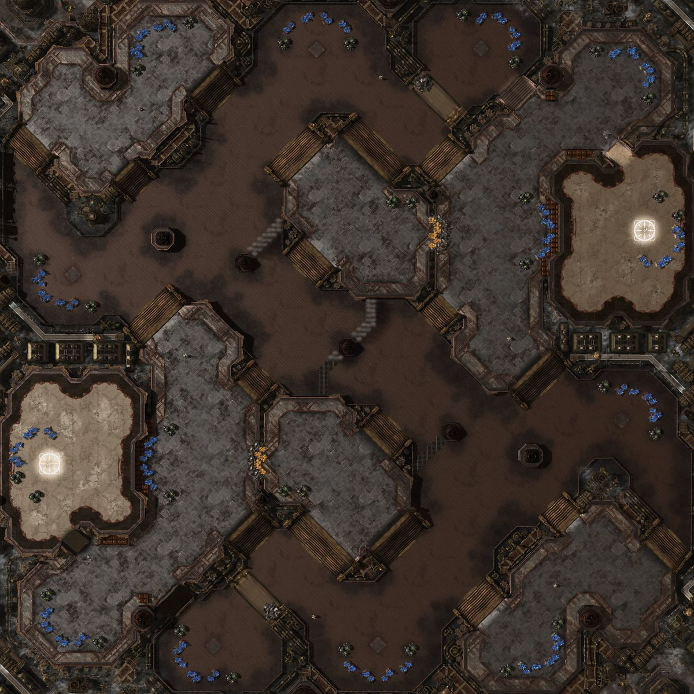

{{ row.dimension }}
红方
{{ row.red }}
蓝方
{{ row.blue }}
{{ row.note }}
{{ observeFogNote }}

对局开始导出特征层后，此处会显示与主界面同步的放大态势沙盘。
{{ duelCompareBoard.subtitle }}
{{ row.red }}
{{ row.blue }}
{{ row.note }}
{{ typeof ln === 'object' ? ln.text : ln }}
{{ observeSenseView.duty }} · {{ observeSenseView.label }}维对照 · 沙盘仅显示本维度单位
{{ unit }}
{{ unit }}
我方落点 {{ observeSenseView.ownHotText }}
敌可见落点 {{ observeSenseView.enemyHotText }}
{{ row.ownNote }}
{{ row.enemyNote }}
{{ forceLlmAdvice.errorText }}
{{ observeSenseView.summary }}
{{ observeSenseView.suggestionSummary }}
{{ observeSenseView.suggestionDetail }}
{{ note.time }}{{ note.text }}
{{ observeEnvironmentView.duty }} · 控制地形与作战环境对照 · 沙盘保持全域可见
{{ item }}
{{ item }}
我方稳控 {{ observeEnvironmentView.ownHotText }}
敌方稳控 {{ observeEnvironmentView.enemyHotText }}
{{ row.ownNote }}
{{ row.enemyNote }}
{{ forceLlmAdvice.errorText }}
{{ observeEnvironmentView.summary }}
{{ observeEnvironmentView.suggestionSummary }}
{{ observeEnvironmentView.suggestionDetail }}
{{ note.time }}{{ note.text }}
{{ orientBoard.duty }} · 意图与脆弱从中档起列 · 主策略 {{ orientBoard.strategyText }}
{{ row.description }}
该维暂无直接证据。
{{ flipText('当前没有中等及以上的蓝方意图。刷新分析后，中、高意图会进入左右两栏。') }}
{{ row.reason }}
节点 {{ row.topTarget }}{{ flipText('尚未形成对蓝方的中高脆弱判断。本栏只看蓝方哪里容易被打穿，不看对我方的威胁。') }}
该维暂无可构建链路
{{ flipText('等待杀伤链数据。点「刷新分析」后，这里会按打击 / 探测 / 防御 / 保障列出蓝方作战链路。') }}
{{ orientBoard.selectedCritical.reason }}
这里会展示你选中的高价值目标（建筑/科技/兵力集结点）及其价值、威胁、位置与动作。 当前还未解析到敌方关键目标数据时，将显示这份默认说明。
{{ stage.text }}
{{ stage.evidence }}
{{ orientSenseFlow.conclusion }}
{{ orientQa.errorText }}
{{ orientQaBriefingText }}
{{ note.time }}{{ note.content }}
{{ stage.text }}
{{ orientEnvironmentFlow.conclusion }}
{{ orientQa.errorText }}
{{ orientEnvironmentFlow.llmFromApi ? orientQaBriefingText : orientEnvironmentFlow.briefing }}
{{ note.time }}{{ note.text }}
{{ typeof ln === 'object' ? ln.text : ln }}
{{ forceLlmAdvice.errorText }}
traces{{ forceLlmAdvice.traces.join(" · ") }}
{{ forceLlmAdvice.answerRaw }}
{{ section.summary }}
{{ section.detail }}
{{ criticalTargetLastSeenText }}，建议结合列表中「上次识别」节点理解模型输出。
{{ strikeTargetAdvice.errorText }}
将当前「关键打击节点」清单与 Redis/写盘态势一并提交给大模型，生成首要/备选打击目标与兵力、时机、风险提示。节点为空时仍可根据全局态势给出方向性建议。
{{ selectedCriticalTarget.name }}
{{ selectedCriticalTarget.reason }}
类别{{ selectedCriticalTarget.categoryLabel }}
位置{{ selectedCriticalTarget.location }}
动作{{ selectedCriticalTarget.action }}
{{ flipText('影响蓝方') }}{{ selectedCriticalTarget.impactedBlueUnits }}
这里会展示你选中的高价值目标（建筑/科技/兵力集结点）及其价值、威胁、位置与动作。 当前还未解析到敌方关键目标数据时，将显示这份默认说明。
类别经济 / 科技 / 兵力 / 防御
位置例如：A1 / B2 / 主矿外坡
动作例如：扩张 / 集结 / 推进 / 防守
{{ flipText('影响蓝方') }}例如：主矿工人、关键科技线
当出现敌方可见单位/建筑后，这里会自动生成高价值目标列表。你也可以先点上方「刷新打击建议」，让模型基于当前态势给出方向性目标。
大模型方案暂不可用：{{ killChainLlmPlans.errorText }}，请等待下一轮实时生成。
{{ task.summary || "按当前态势执行链路破坏任务。" }}
杀伤链数据生成后，这里会出现可选作战模式（方案）与四维任务分解。你也可以先在左侧查看链路分组结构。
{{ step.subtitle }}
{{ group.topReason || (group.count ? '威胁分析中…' : '暂无风险') }}
◀ 地图已高亮执行「刷新分析」后将自动填充
执行「刷新分析」启动 智能体 流水线
以生成风险处置建议与指令条目
{{ deerflowConsoleResponsePlan.plan }}
运行模式：{{ deerflowConsoleResponsePlan.mode }} · 建议指令条目 {{ deerflowConsoleResponsePlan.commandCount }}
需人工确认{{ deerflowConsoleResponsePlan.hitlPrompt }}
需人工确认后再下发操作建议。
快照{{ deerflowConsoleGameSnapshot }}
意图{{ deerflowConsoleIntentSummary }}
风险{{ deerflowConsoleRiskSummary }}
{{ deerflowRisk.thread_id || "—" }}{{ deerflowRisk.pipeline_stdout }}
{{ deerflowRiskDispositionSnippet }}
{{ deerflowRiskResponseSnippet }}
{{ row.description }}
{{ group.items.join("；") }}
暂无该维度证据。
{{ b.body }}
系统约每 12 秒自动刷新；也可点「刷新分析」立即拉取大模型结果
{{ flipText('红方决策方案生成') }} · 作战环境自博弈
{{ flipText('每个时间点一轮：红方兵力布势方案规划、蓝方兵力布势行为预测、红方兵力布势方案反思纠正，正对双方编制落点收敛本轮布势。结论写入杀伤网中心「作战环境」。') }}
{{ envCotSelfplayError }}
{{ (envCotLoop && envCotLoop.thesis) || '正对双方编制落点生成红蓝对抗思维链。' }}
方案总体 {{ envCotPackOf(envCotTurnOurs).summary }}
方案总体 {{ envCotPackOf(envCotTurnEnemy).summary }}
方案总体 {{ envCotPackOf(envCotTurnReflect).summary }}
方案总体 {{ envCotFinal.summary || envCotFinal.conclusion || '—' }}
{{ flipText('红方决策方案生成') }} · {{ cotSenseDimLabel }}维自博弈
{{ cotLoopIntroCopy }}
后端已停下，自动请求已暂停，当前为最近一轮快照。
{{ cotSelfplayError }}
{{ (activeCotRound && activeCotRound.loop && activeCotRound.loop.thesis) || '根据当前态势生成红蓝对抗思维链。' }}
{{ activeCotRound.error }}
方案总体 {{ cotDimOf(cotTurnOurs, cotSenseDimKey).summary }}
方案总体 {{ cotDimOf(cotTurnEnemy, cotSenseDimKey).summary }}
方案总体 {{ cotDimOf(cotTurnReflect, cotSenseDimKey).summary }}
方案总体 {{ (planCotFinal.dims && planCotFinal.dims[cotSenseDimKey]) || '—' }}
{{ (activeKillnet && activeKillnet.thesis) || '探测提供目标，打击形成效果，防御保护窗口，保障维持持续，作战环境居中约束。点模块查看对应执行步。' }}
{{ cotKillnetError || activeCotRound.killnetError }}
{{ step.action }}
门槛 {{ step.gate }} 并行 {{ step.sync }}{{ plannerCotBriefing.digest }}
{{ plannerCotBriefing.dims[dim.key] || '—' }}
{{ step }}
{{ plannerFocusDossier.intent.rationale }}
{{ sec.body }}
{{ replyDisplayText(plannerFocusItem) }}|
智能体正在落卷…
{{ task.detailCn }}
本维暂无任务
本维暂无编组
{{ tacticsEvaluationBoard.verdict }}
{{ item.detail }}
{{ item.outcome }}{{ item.oodaBreak.text }}
{{ item.amendNote }}
{{ knowledgeExperienceBoard.summary }}
{{ knowledgeExperienceBoard.focus }}
本轮沉淀对既有记忆做了修正或补充
原条目：{{ item.target }}
{{ item.change }}
{{ item.reason }}{{ item.amendNote }}
沉淀条目与规则修订合一展示
{{ mem.summary }}
沉淀：{{ mem.learned }} 更新：{{ mem.updateNote }} 关联轮次：{{ mem.linkedRoundId }}{{ mem.amendNote }}
{{ evalAmendDialog.title }}
{{ observeFogNote }}
当前阵营（{{ activeDuelLabel }}）尚未写入态势数据。对局开始并导出特征层后，沙盘会自动出现。
基于当前对局态势作答
支持对前线压力、扩矿时机、峡谷交战等问题作答
欢迎向我提问当前展示：{{ activeDuelLabel }}
按 OODA 四环组织智能体协同：观察 → 判断 → 决策 → 行动
实时接入《星际争霸 II》天梯战场。智能体（红）与智能体（蓝）分别接管双方虫族席位，在采集、科技、产兵与交火的完整循环里持续指挥。本席按观察、判断、决策、行动展开：摊开可见情报，形成判断，收敛方案，下发指令。战局与引擎帧同步，不是回合制推演。
红方固定玩家 1，种族为虫族（Zerg），由智能体（红）指挥。虫族擅长以幼虫批量产兵、菌毯扩张与变形升级，节奏灵活、数量优势明显。按打探防保维度，主要单元包括：打击——跳虫、蟑螂、毒爆虫、刺蛇、破坏者、飞龙、雷兽；探测——王虫、监察王虫、女王（注射与前线视野）；防御——脊针爬虫、孢子爬虫、女王输血与基地驻守；保障——工蜂、提炼厂、孵化场/虫穴/蜂巢及产兵建筑（孵化池、蟑螂繁殖场、刺蛇巢穴等）。
蓝方固定玩家 2，种族为虫族（Zerg），由智能体（蓝）指挥。与红方同为虫族编制，同样以幼虫批量产兵、菌毯扩张与变形升级见长，节奏灵活、数量优势明显。按打探防保维度，主要单元包括：打击——跳虫、蟑螂、毒爆虫、刺蛇、破坏者、飞龙、雷兽；探测——王虫、监察王虫、女王（注射与前线视野）；防御——脊针爬虫、孢子爬虫、女王输血与基地驻守；保障——工蜂、提炼厂、孵化场/虫穴/蜂巢及产兵建筑（孵化池、蟑螂繁殖场、刺蛇巢穴等）。
胜负沿用《星际争霸 II》歼灭规则。拆光对方关键建筑、或使其无法再战，即为胜利；己方主建筑被毁或无法续战，即为失败。红方必须在经济、科技和兵力上压过蓝方，并守住己方节点，直到对手失去重建与反击能力。没有积分赛，也没有回合计数。
{{ col.duty }}